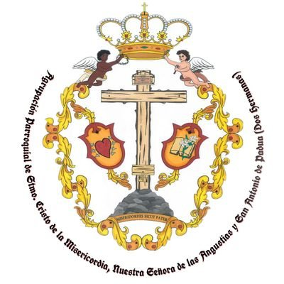
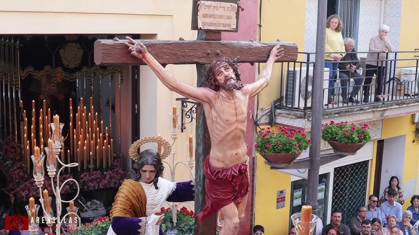

Misericordia
Agrupación Parroquial Santisímo Cristo de la Misericordia, Nuestra Señora de las Angustias, Santa María Magdalena y San Antonio de Padúa

Numero de hermanos
270
Cortejo
180
Autores
Nuestro Padre Jesús de la Misericordia es obra de Manuel Téllez Berraquero (2020). Nuestra Señora de las Angustias es obra de Manuel Téllez Berraquero (2017). Santa María Magdalena es obra de Juan Manuel Montaño (2024).
Capataces
Ismael Domínguez Cardona en el Paso de Cristo y Antonio Durán Verdugo en el Palio
Música
A.M. Ntro. Padre Jesús Cautivo, tras el Paso de Cristo y B.M. Ciudad de Dos Hermanas tras el Palio.
RECORRIDO
| Hora Aprox. | Cruz de guía |
|---|---|
| 20:00 | Salida |
| -- | Nuestra Señora de Valme |
| -- | San Luis |
| -- | Canónigo |
| -- | Santa María Magdalena |
| -- | Doctor Fleming |
| -- | Zurbarán |
| -- | Estepa |
| -- | Los Molares |
| -- | Las Cabezas de San Juan |
| -- | Isaac Peral |
| -- | La Hacendita |
| -- | San José |
| -- | Beethoven |
| -- | Rivas |
| -- | Lope de Vega |
| -- | Melliza |
| -- | Cervantes |
| -- | San Luis |
| -- | Nuestra Señora de Valme |
| 01:00 | Entrada |